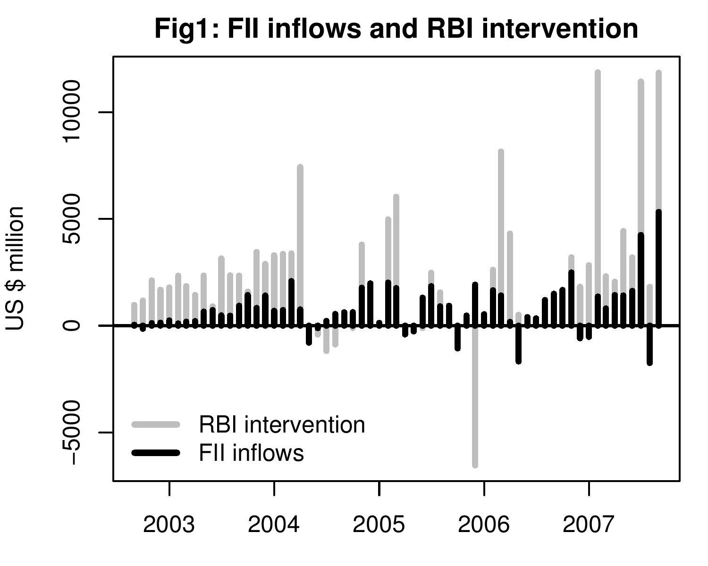

Dangers of a one-way bet
Indian Express, 23 October 2007
The RBI has been buying large amounts of dollars in the foreign exchange market in order to prevent rupee appreciation. Unfortunately, its intervention has failed to achieve this objective and the rupee has been strengthening sharply in recent months. The latest measure by the government, in its struggle to keep the rupee weak, is a proposal to curb foreign capital inflows through Participatory Notes(PNs). However, data shows that contrary to the impression that PNs are responsible for the upward pressure on the rupee, the inflow of dollars through PNs has been only a small part of the story.
Further, the step to block capital flows in order to slow down rupee appreciation will signal that the rupee remains a one way bet. This will encourage more capital to flow into India.
Here we compare data on FII net inflows from SEBI with data on net purchase of dollars by the RBI. The data shows that RBI's purchase of dollars has been much more than net FII investment into the debt and equity markets in India. PNs are only a part of FII flows and reducing flows through PNs or even blocking them altogether would not have made a significant dent on the amount RBI would have bought in trying to prevent rupee appreciation. In the last 11 months, between November 2006 and September 2007, FIIs brought in a total of USD 17.5 billion into India. However, RBI spent more than 3 times this amount on manipulating the rupee. It bought USD 56.7 billion in the foreign exchange market in this period.
 Figure 1 shows the monthly net purchase of dollars by the RBI in the foreign market for the last five years, compared to net FII flows in debt and equity markets in India. It shows that nearly every month, RBI has bought up the entire FII inflows and more. In many cases the purchase by RBI has been many times the total inflow of dollars that has come through FIIs. Estimates suggest that about half of incremental foreign capital inflows of FIIs are through PNs. Even if all FII flows had been banned, going by the RBI's net purchase of dollars we can deduce that the rupee would still have faced pressure to appreciate. (Since data for intervention is available with a two month lag, we can use changes in net foreign exchange assets with the RBI which is a good proxy for RBI intervention for recent periods. The figure of USD 11.8 billion for September '07 is based on the change in foreign exchange assets.)
Have the recent weeks been different? Is it that after the US subprime crisis and the Fed rate cut, a big share of global equity portfolio flows have come into India and changed the picture? In the week of September 24th to 29th reserves increased by USD 10.84 billion. FII inflows were only USD 2.6 billion. The story that RBI has been buying much more than FII flows, even after the restrictions on external commercial borrowings were imposed in May this year shows that dollars are flowing in through multiple channels.
So then what is achieved by introducing capital controls like the ones proposed on PNs, or by restrictions on ECBs which proved to be ineffective in removing the pressure on the rupee? Such moves signal that the goverment will be fighting the pressure on the rupee to appreciate. Considering that India is one of the fastest growing economies in the world, capital is going to keep coming into India and it is unlikely that the RBI will be able to keep the rupee at Rs.39.50 to a dollar forever. The maximum that it is likely achieve is to slow down the pace of appreciation.
Restricting ECBs or PNs give the same message that heavy interention by the RBI week after week gives. The message is that that either you will see the rupee slowly appreciate in the coming days, or you will see the RBI fight the appreciation until the time comes when it can no longer do so and will let go allowing a sharp appreciation. The conclusion is straight forward : the rupee is a one-way bet. No wonder no one expects the rupee to depreciate. Every analyst continues to forecast a stronger rupee and advices clients to invest in India. Already the returns on rupee assets in India are high. If in addition, the rupee is sure to appreciate, dollar returns to the investments in India will be even higher. The steps to curb inflows will only encourge more capital inflows.
Back up to Ila Patnaik's media page
Back up to Ila Patnaik's home page